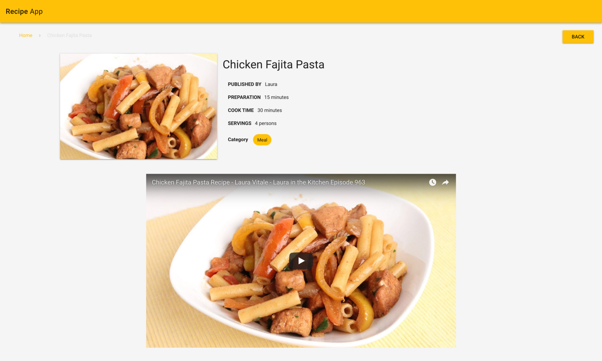

How to build a recipe app using Vue.js and Vuex
In this tutorial, I’m going to show you how to create an elegant Recipe App using Vue2, Vuex, Vuetify and Cosmic JS. For the sake of understanding how to consume Restful API’s, this tutorial will show how to make AJAX (XHR) requests to the Cosmic JS API in order to retrieve, add, update, and delete data/media in our Cosmic JS buckets. Let’s get started. Download the GitHub repo
Prerequisites
You’ll need Node JS and npm. Make sure you already have them before you start.
Getting Started
First of all, you have to be sure you have node > 6.x installed, than run the following commands:
npm install -g vue-cli
cd recipe-app
npm install
npm run dev
Browser window will open automatically once you’ll run the last command.
What we’re installing and why:
- We’re going to use vue and vuex libraries to create components and manage state.
- ing vue-router package to navigate between our components.
- We’re using vuetify package to create beautiful layouts using vue components.
- We’re going to use cosmicjs library to handle our requests to our Cosmic JS bucket.
- vue-wysiwyg is used for editor & vee-validate is used for form validation.
Vue Instance
new Vue({
store,
el: '#app',
router,
render: h => h(App),
beforeMount: function(){
this.$store.dispatch
}
})
Here Vue instance is created. el: '#app' is the id of the element from index.html where vue will be injecting the app. store is vuex store. I will talk about vuex later. router is injecting router object. render: h => h(App) is telling app to inject App component first in the App.
Setup App.vue
\src\App.js is the first component that will render. I used vuetify components for UI and provided stylus for css. You
can check their documentation here. Most important code block here to include router view in the template.
This piece of code will render the router and respective components based on routes.
Vuex
Moving ahead first I discuss about Vuex and why we should use that. You can obviously use simple state and props for smaller applications. But for large applications we must use some kind of state management like redux in React. Vuex is maintained by vue team and it is widely used. Today we will that. Below is the Vuex flow diagram that I will explain.

State is where our whole application state/data will be store. So how it will work? For example, you are using this store in you component and want to change some state value. You have to dispatch an action. Then actionwill commit the mutation and it will change the state. So why action is needed, we can change state directly in mutation. Action is very important. We need actions when we have to call any async function and then on its success change the state. In case of API we consume request in actions and commit mutation to change state. It is very simple but very import to follow.
Getters are simple getter function to get value of state in components. If you need one state value in different components so it is better to create getter for it and use that getter in component as computed property.
Information about the other two components you must find out yourself:)
You're never going to know enough, if you do not know more than enough.
© William Blake